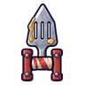 คาทาร์ตะหลิว | 1 | 49 | ไม่มีธาตุ | ผึ้งทานตะวัน 0.25% |
 คาทาร์แดง คาทาร์แดง | 1 | 46 | ไม่มีธาตุ | อาวุธเริ่มต้นของสาย (ได้ตอนเปลี่ยนอาชีพ) |
 คาทาร์งาหมูป่า คาทาร์งาหมูป่า | 6 | 51 | ไม่มีธาตุ | หมูป่าเขี้ยวตัน ร่างเขาเงิน 0.25% |
 คาทาร์ขาปู คาทาร์ขาปู | 8 | 47 | น้ำ | เต่าตะไคร่ขี้โมโห 0.12% |
 คาทาร์หุ่นไล่กา คาทาร์หุ่นไล่กา | 12 | 51 | ไม่มีธาตุ | หุ่นไล่กาผีสิง 0.25% |
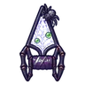 คาทาร์ใยแมงมุม | 13 | 45 | พิษ | แมงมุมถ้ำ 0.06% |
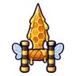 คาทาร์รวงผึ้ง | 16 | 47 | ลม | สไลม์น้ำผึ้ง 0.12% |
 คาทาร์กรงเล็บแมวดำ คาทาร์กรงเล็บแมวดำ | 18 | 47 | มืด | แมวดำสุสาน ร่างขนน้ำตาล 0.24% |
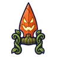 คาทาร์ฟักทองยิ้ม | 19 | 45 | ไฟ | ฟักทองจอมซน 0.06% |
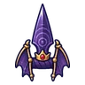 คาทาร์คลื่นเสียงราชาค้างคาว | 23 | 61 | มืด | ราตรีราชาค้างคาว 0.5% |
 คาทาร์เหล็กกล้า คาทาร์เหล็กกล้า | 26 | 82 | ไม่มีธาตุ | ภูตเถ้าถ่าน 0.25% |
 คาทาร์ก้ามแมงป่อง คาทาร์ก้ามแมงป่อง | 29 | 74 | ไฟ | แมงป่องแดง 0.12% |
 คาทาร์จะงอยอินทรี คาทาร์จะงอยอินทรี | 31 | 78 | ลม | อินทรีพายุ 0.25% |
 คาทาร์ไฟเย็น คาทาร์ไฟเย็น | 33 | 70 | ไฟ | แม่มดเทียนไข 0.06% |
 คาทาร์ป้ายหลุมศพ คาทาร์ป้ายหลุมศพ | 35 | 78 | ไม่มีธาตุ | ป้ายหลุมศพผีสิง 0.25% |
 คาทาร์ครีบผีเห็ด คาทาร์ครีบผีเห็ด | 36 | 70 | มืด | ผีครีบเห็ด ร่างซีดขาว 0.12% |
 คาทาร์ผาลไถซอมบี้ คาทาร์ผาลไถซอมบี้ | 38 | 74 | ไม่มีธาตุ | ซอมบี้ชาวนา 0.12% |
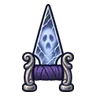 คาทาร์กระจกผีสิง | 40 | 70 | วิญญาณ | ผีดวงไฟ 0.06% |
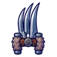 คาทาร์กรงเล็บหมาป่า | 42 | 74 | มืด | หมาป่าเงาจันทร์ 0.12% |
 คาทาร์เปลือกเกาลัด คาทาร์เปลือกเกาลัด | 45 | 74 | ไม่มีธาตุ | ตอไม้ผี 0.12% |
 คาทาร์ขนแกะเมฆ คาทาร์ขนแกะเมฆ | 47 | 70 | ลม | แกะเมฆเขาม้วน 0.06% |
 คาทาร์หมวกราชาเห็ด คาทาร์หมวกราชาเห็ด | 48 | 96 | พิษ | ราชาเห็ดเรืองแสง 0.5% |
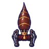 คาทาร์ท้องนางพญามด | 50 | 96 | ดิน | รังนางพญามด 0.5% |
 คาทาร์เจาะเกราะ คาทาร์เจาะเกราะ | 52 | 113 | ไม่มีธาตุ | ผู้ช่วยนักดาราศาสตร์กลวง 0.25% |
 คาทาร์กรอบหมอกเงา คาทาร์กรอบหมอกเงา | 55 | 101 | มืด | ภูตหมอกเงา 0.12% |
 คาทาร์ดอกไม้กินคน คาทาร์ดอกไม้กินคน | 58 | 108 | พิษ | ดอกไม้กินคน 0.25% |
 คาทาร์กระถางไฟ คาทาร์กระถางไฟ | 60 | 97 | ไฟ | ตอไม้ถ่านคุ 0.06% |
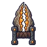 คาทาร์ผลึกจีโอด | 62 | 112 | ดิน | หินจีโอดกระโดด ร่างผลึกฟ้า 0.5% |
 คาทาร์ผลึกบิสมัท คาทาร์ผลึกบิสมัท | 62 | 101 | ไม่มีธาตุ | หมาจรเมืองหลวง 0.12% |
 คาทาร์ช่องลม คาทาร์ช่องลม | 64 | 97 | ลม | เทอโรซอร์ 0.06% |
 คาทาร์น้ำพุร้อน คาทาร์น้ำพุร้อน | 66 | 101 | น้ำ | พลีซิโอซอร์ 0.12% |
 คาทาร์ศิลาสุริยา คาทาร์ศิลาสุริยา | 68 | 97 | ศักดิ์สิทธิ์ | หุ่นของคาร์ดินัล 0.06% |
 คาทาร์เลื่อยคนตัดไม้ คาทาร์เลื่อยคนตัดไม้ | 70 | 101 | ไม่มีธาตุ | ผู้ตีระฆังกลวง 0.12% |
 คาทาร์ตะปูราชาสุสาน คาทาร์ตะปูราชาสุสาน | 74 | 132 | มืด | บัลลังก์ราชาสุสาน 0.5% |
 คาทาร์ก้ามกุ้งเครย์ฟิช คาทาร์ก้ามกุ้งเครย์ฟิช | 76 | 140 | น้ำ | กุ้งเครย์ฟิชยักษ์ ร่างแดงสุก 0.5% |
 คาทาร์ชิ้นเอกช่างตีเหล็ก คาทาร์ชิ้นเอกช่างตีเหล็ก | 77 | 136 | ไม่มีธาตุ | หุ่นระฆังจ่าฝูง 0.25% |
 คาทาร์เขาอิมป์ คาทาร์เขาอิมป์ | 80 | 129 | ไฟ | อิมป์เปลวไฟ 0.12% |
 คาทาร์คลื่นยักษ์ คาทาร์คลื่นยักษ์ | 82 | 123 | น้ำ | พลีซิโอซอร์ 0.06% |
 คาทาร์จะงอยนกกระสาเงา คาทาร์จะงอยนกกระสาเงา | 84 | 140 | มืด | นกกระสาเงา 0.25% |
 คาทาร์เงาเดินได้ คาทาร์เงาเดินได้ | 86 | 129 | มืด | เงาเดินได้ ร่างเงาม่วง 0.24% |
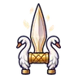 คาทาร์หงส์ขาว | 86 | 123 | ศักดิ์สิทธิ์ | นกกระสาเงา 0.06% |
 คาทาร์ดอกฟ็อกซ์โกลฟ คาทาร์ดอกฟ็อกซ์โกลฟ | 87 | 129 | พิษ | หนูคลอง 0.12% |
 คาตาร์เงาใต้สะพาน คาตาร์เงาใต้สะพาน | 88 | 142 | มืด | บอสผู้ถูกรากสิง |
 คาทาร์รากต้นไม้ยักษ์ คาทาร์รากต้นไม้ยักษ์ | 90 | 136 | ไม่มีธาตุ | หนอนรากมุดดิน 0.25% |
 คาทาร์หมาหินอ่อน คาทาร์หมาหินอ่อน | 92 | 123 | ดิน | หมาหินอ่อน ร่างรอยร้าวทอง 0.12% |
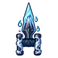 คาทาร์ภูตจางหาย | 92 | 123 | วิญญาณ | ผีดวงไฟ 0.06% |
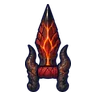 คาทาร์เขามังกรลาวา | 95 | 168 | ไฟ | หัวใจมังกรลาวา 0.5% |
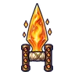 คาทาร์ใจกองไฟนิรันดร์ | 99 | 182 | ไฟ | ดรอปทั่วโลก Lv 90+ |